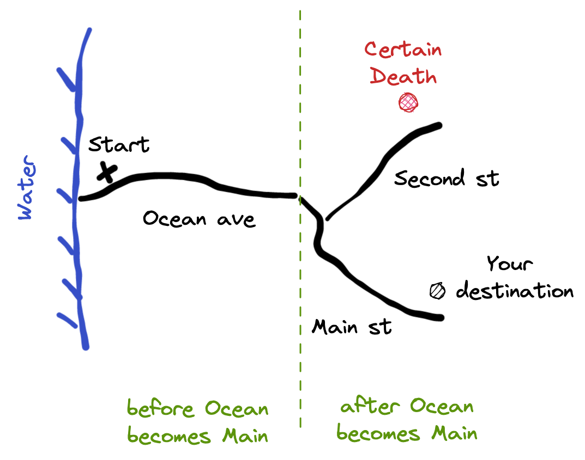

Imagine you got lost in a foreign town. You see someone and ask them a question in whatever little foreign language you have: "what street is this?" When they tell you the name of the street, you are no longer lost, assuming you know every street or have a map with you. But what if you ask, and the stranger instead of naming the street simply states a negative "you are NOT on Main street", then what? If the town only has two streets: Main and Second, then you are fine too. If you are not on Main street, then you are on Second street. Of course, if there are more than two streets, the answer "you are NOT on Main street" does not help you at all. You could be on any of the town's other N - 1 streets.
In the same town, now imagine you were walking with some directions. From the ocean shore, you were going down the Ocean ave, then you were taking the Main street to your destination. But the town has a fork in the road, the Ocean ave can lead to Main street and to Second street. At the end of Second street there is a fire-breathing dragon, and he is hungry. You do not want to go there.
Let's say at some point in your journey you ask someone "This is NOT Second street, is this?" You only hope to eliminate the dangerous section. But that is a wrong question to ask (props to Lemony Snicket). It only eliminates one street, and our town has three. Thus we could be on two streets, including Ocean avenue. We could still be approaching the dangerous fork and not even know it!
Application states
Often when walking through a new city, it helps to separate the journey into logical sections. In our case, the two legs of the journey are "before the fork" and "after the fork".
If we get disoriented, but know the section we are on, we can safely use a "This is NOT Second street, is this?" Each section cuts the number of possible choices to two.
- when walking before the fork, the only answer possible is "No, this is not Second street" (we can only be on Ocean ave)
- when walking after the fork, the only two choices are Second and Main. If we hear "Yes, you are on Second street", we turn around and run back to the fork in the road.
Here is how this translates to web applications. Let's model our application's state using xstate.js library. In my case, we will start with the simple Promise machine example from the Xstate documentation.
1 | import { createMachine } from 'xstate' |
The machine only has two 3 states, almost like the 3 streets in our town. We can copy / paste the above code into the Xstate visualizer to see the states.
If we emit the "REJECT" event, the machine transitions to the "rejected" state. If we emit the "RESOLVE" event, the machine goes to the "resolved" state.
Let's implement a web interface.
1 | import { useMachine } from '@xstate/react' |
The application reacts to your button clicks. Each button emits its own event, which the machine uses as input. The machine the transitions to the new state, and the web app re-renders.
üéÅ You can find the source code for this blog post in the repo bahmutov/xstate-load-state.
How can we verify that application is working correctly? We can write a Cypress test to click the button and check the page.
1 | it('resolves the promise (wrong question)', () => { |
The above test uses a negative assertion cy.contains('Loading...').should('not.exist') and while it passes, it does not tell us if the state machine is working correctly.
For example, the application might wire the state machine incorrectly. On clicking the "Resolve" button it might go to the "Rejected" state, yet our test will still pass.
1 | pending: { |
Ughh, our test gives us false confidence. The application is broken, yet the test is green. It asked a wrong question. Remember that there 3 three streets, and your negative assertion only eliminates one of them.
What if we ask a negative assertion about the "Rejected" message? That still does not eliminate all the possible problem states.
1 | it('resolves the promise (more wrong questions)', () => { |
The negative assertion cy.contains('Promise Rejected').should('not.exist') only helps us IF we are in the binary situation "Promise Rejected | Promise Resolved". If the application wires the states incorrectly, we could still be at the loading state! Let's break the app by removing the "onClick" handler from the "Resolve" button.
1 | <button |
Negative assertions only work if we are for sure in a binary situation. The best way in our situation to ensure this is to eliminate states, even with negative assertions.
1 | it('resolves the promise after no longer loading', () => { |
Now the test correctly detects the broken application.
Test the state
While checking the UI is nice, we can go beyond it. We can expose the current state from the application during end-to-end tests by checking the presense of window.Cypress property. Then our test assertions can be a lot more powerful.
1 | const Component = () => { |
From the test we can get to the window.state object and directly ask it.
1 | it('moves away from the pending state', () => { |
So remember, instead of checking if you no longer can see the ocean, check if you are on the right street. And maybe then check if you for real cannot see the ocean any more.
So by using positive assertions, or by using negative assertions in binary situations, we can correctly test everything? Almost - as long as the state machine is correct.
The missing state
When someone gives you directions, they might misremember, or assume you know the details. A fork in the road might be more like a T intersection. Ocean ave might become Main street before Second street branches out.

The above situation is dangerous to the traveler. They might think they are safe as they see "Main street" signs, and then accidentally continue down Second street. Asking "This is NOT Second street, is it?" gives them a false sense of security, as they do not know that the answer might change as they keep walking - the fork is still coming up!
The states "Ocean ave = before the road fork", "Main ave = after the road fork" do not cover the real world. The part between the street changing the name from Ocean ave to Main st, but before Second st branches out is ... weird. It is not covered by our description at the start of the walk. Asking questions (even good ones, like "Are we on Main street?") does not gives us enough information. Even when the answer is "Yes", we are still in danger, and we can turn to Second street accidentally.
This part of the road is missing its own state. Our journey is really three states as shown in the next diagram: before the street changes its name, after the name change, but before the fork, and after the fork.
Testing an app with a missing state
Here is how a missing state can happen in your web application. We will take our "Promise" state machine which works very well, and then we will try to implement "application loading" state machine. We will start by what we think is a reasonable first step - emit the event "Reject" after a short delay.
1 | <button |
Adding a 70ms delay should not change the app too much, right? I hope our tests catch the error though - we are sending the "REJECT" event to the app instead of "RESOLVE". Let's see our test.
1 | it('A negative assertion and app delay', () => { |
We assume that clicking the button "Reject" moves the app out of "pending" state to the "Rejected | Resolved" state. Now that we have binary option to check, we can use the negative assertion cy.contains('Promise Resolved').should('not.exist') to correctly test the app.
The test does not catch the problem. The assumption that we are no longer in the "pending" state immediately after clicking the button "Reject" is false - the application stays in that state during onClick={() => setTimeout(() => send('RESOLVE'), 70)} duration.
I see this error a lot. A widget is loading, and the test checks if an error message is shown. There is no error message, so the test continues. But that is wrong, since the app is still loading. Then the app finishes the loading and displays an error, but it is too late for the test to detect.
So what's a better way?
- Explicitly model the "loading" state here. Let's change our state machine a little.
1 | import { createMachine } from 'xstate' |
Let's visualize this tate machine
- Have an explicit way to check the current state from the test. This way the test can check if the application is still loading the data.
For example, you could set class or data attribute
1 | <div className="mb-5 self-center"> |
Then the test can explicitly check how the state moved along the expected transitions.
1 | it('Checks the state', () => { |
Another alternative to checking the page, is to check the underlying state of the state machine. We can access the state machine from the test, just like before; the application code needs to put the state object on the window object. I suggest adding a custom command for checking the expected state.
1 | Cypress.Commands.add('reachedState', (state) => { |
For example, in our case it catches the transition to the wrong state.
Finally, after fixing the application code, we have a passing test
1 | it('Checks the state machine', () => { |

The test is tight - it will be hard for the application to be broken with this kind of test that confirms the app's state transitions step by step using positive assertions.
Use better questions
- when getting lost in a city, ask which street intersection you are on. That gives you a unique precise position, eliminating all other possibilities.
- when testing a web application and the user flow, use properties that eliminate as many other states as possible. For example, I love using cy.location to know when the application has transitioned to the new state. A positive assertion eliminates a lot more possible states than a negative assertion.